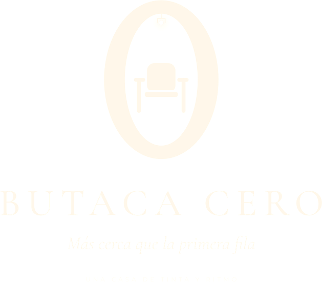

Artefactos
Toca un artefacto para ver qué es, de quién es y qué ha salido de él.
El Sello
Tinta y Ritmo es sello, casa transmedia y management. Aquí una obra no sale sola: sale con su mundo, su libro, su música y su imagen. Hoy la casa es de Di•eM, y la puerta está abierta para quien quiera construir el suyo.
Publicamos y cuidamos cada lanzamiento, de la primera hoja al disco completo.
Cada obra tiene su artefacto y su mundo: libro, canciones, video y escenario contando la misma historia.
Acompañamos la carrera del artista: presentaciones, alianzas y el camino de su universo.
Las casas

La casa madre, donde nace cada universo.

Donde la música toma forma.

Más cerca que la primera fila.
Para artistas
Escríbenos y cuéntanos de tu obra.
tintayritmo.oficial@gmail.com